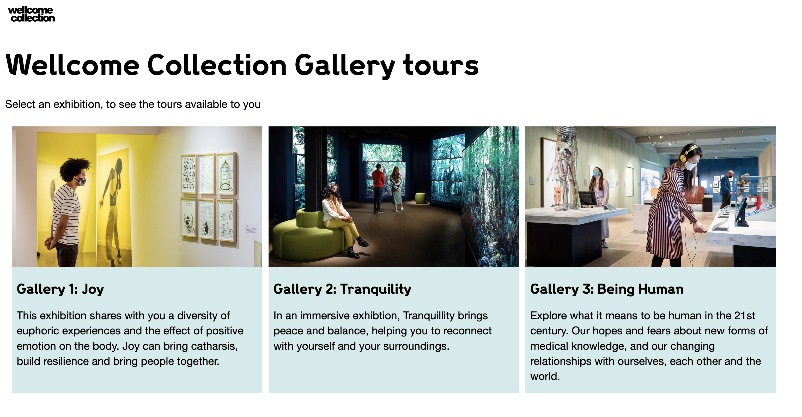
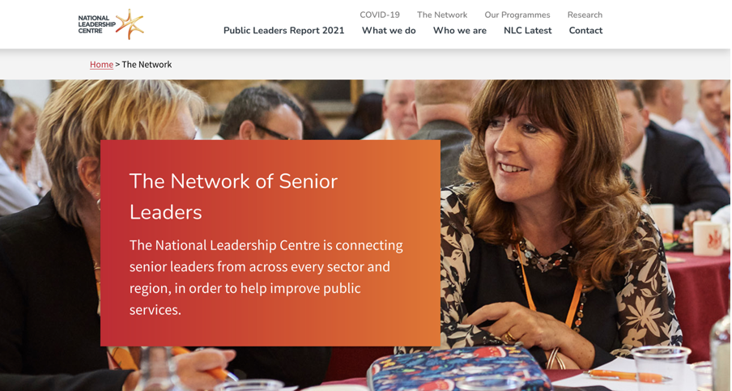
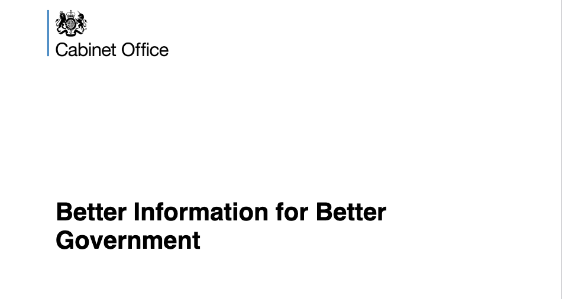
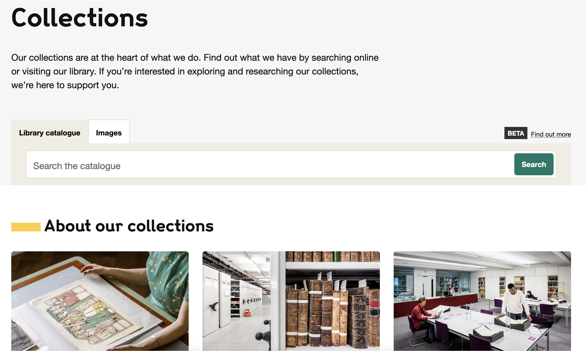
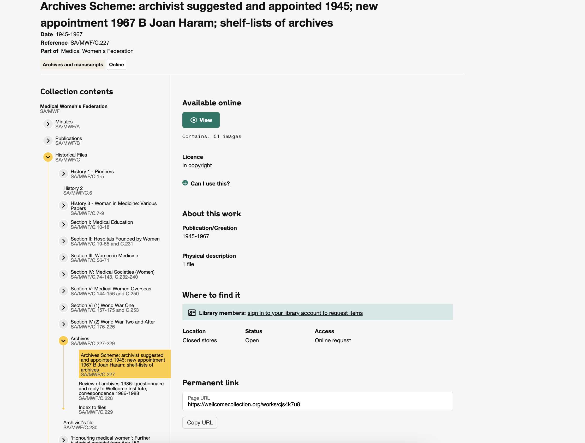
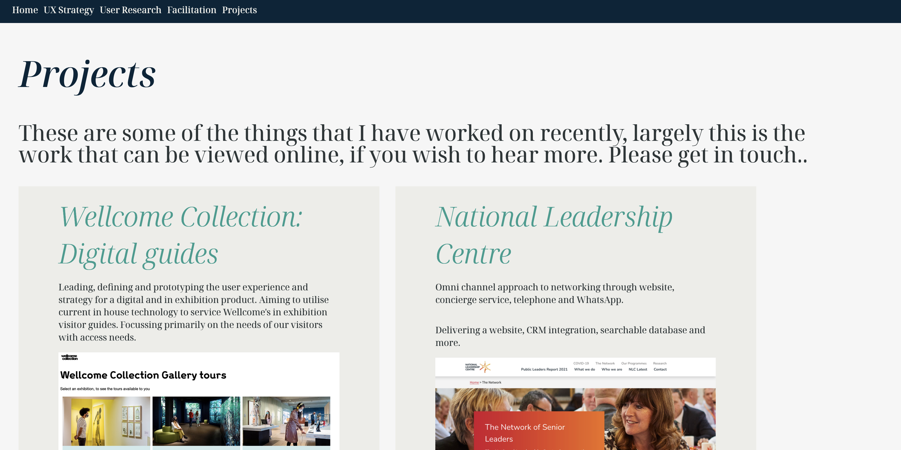

Projects
These are some of the things that I have worked on recently, largely this is the work that can be viewed online, if you wish to hear more. Please get in touch..
Wellcome Collection: Digital guides
Leading, defining and prototyping the user experience and strategy for a digital and in exhibition product. Aiming to utilise current in house technology to service Wellcome's in exhibition visitor guides. Focussing primarily on the needs of our visitors with access needs.
Cabinet Office: National Leadership Centre
Omni channel approach to networking through website, concierge service, telephone and WhatsApp.
Delivering a website, CRM integration, searchable database and more.
Cabinet Office: Better Information for Better Government
Discovery research project, developing ideas around the possibility of interdepartmental data sharing within government.
Wellcome Collection: Collections Search
Researching, iterating and testing Wellcome Collection's search and catalogue filtering.
Wellcome Collection: Archives
Scoping, testing and iterating on a intuitive and visual representation of our Wellcome Collection's archives
Energized Work: Freelance
Working with the energized team to deliver facilitated workshops, lean product workshops, deliver digital projects and develop communication within teams

This website
I designed and built this responsive website from scratch with the help of Figma, HTML and CSS.
